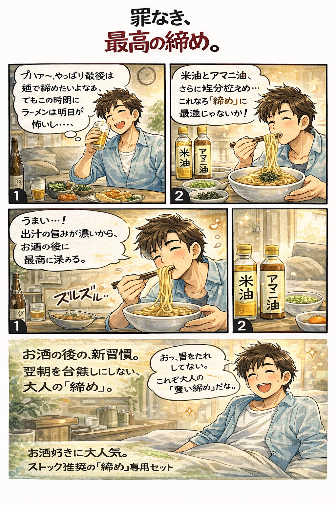

もし、あなたの冷蔵庫に
「柿川亭」のストックがあったら…

【CASE 1: 忙しい平日の救世主】
仕事でクタクタの帰り道。「何か美味しいものは食べたいけど、作る気力はゼロ…」
そんな時、冷凍庫から取り出してたった3分！疲れた身体にガツンと響く、お店クオリティの味が自宅で完成。
仕事でクタクタの帰り道。「何か美味しいものは食べたいけど、作る気力はゼロ…」
そんな時、冷凍庫から取り出してたった3分！疲れた身体にガツンと響く、お店クオリティの味が自宅で完成。

【CASE 2: 週末の家族おうちランチ】
週末のお昼、「外食は混んでて大変だし、自炊もマンネリ気味…」
そんな休日は、家族みんなで柿川亭の油そば！子供も大人も大喜び、休日の食卓がパッと華やぐ特別な一杯に。
週末のお昼、「外食は混んでて大変だし、自炊もマンネリ気味…」
そんな休日は、家族みんなで柿川亭の油そば！子供も大人も大喜び、休日の食卓がパッと華やぐ特別な一杯に。

【CASE 3: 深夜の作業のお供（夜食）】
勉強や仕事で夜更かし中。「小腹が空いたけど、重い料理は胃もたれが心配…」
特製アマニ油と米油を使った油そばなら、スープレスでカロリー控えめ。翌日に響かないヘルシーな大人の夜食。
勉強や仕事で夜更かし中。「小腹が空いたけど、重い料理は胃もたれが心配…」
特製アマニ油と米油を使った油そばなら、スープレスでカロリー控えめ。翌日に響かないヘルシーな大人の夜食。

【CASE 4: お家飲みの最高の「締め」】
家でお酒を楽しんだ後、「最後にラーメンで締めたい！」という強い欲求。
でも健康面も気になる…そんな時は旨味たっぷりの柿川亭が最適。お出汁と油の香りが最高の余韻に。翌朝もスッキリ！
家でお酒を楽しんだ後、「最後にラーメンで締めたい！」という強い欲求。
でも健康面も気になる…そんな時は旨味たっぷりの柿川亭が最適。お出汁と油の香りが最高の余韻に。翌朝もスッキリ！

【CASE 5: 大切な人への贈り物】
お世話になった方へのちょっとしたプレゼントや手土産に。
「こんなに美味しい油そば、家で食べられるなんて！」ともらった人も大絶賛。センスが良いと褒められる特別なギフト体験。
お世話になった方へのちょっとしたプレゼントや手土産に。
「こんなに美味しい油そば、家で食べられるなんて！」ともらった人も大絶賛。センスが良いと褒められる特別なギフト体験。